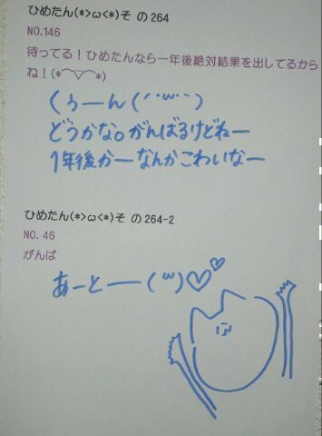
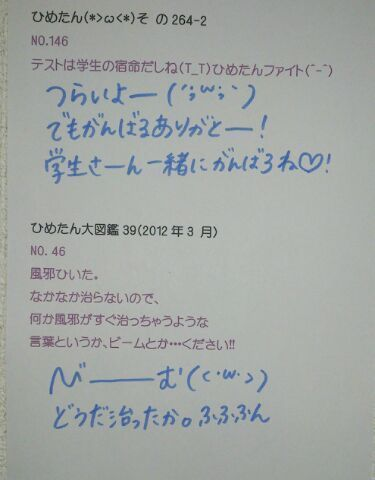

| 2013/05 27 Mon | ひめたん大図鑑48(2012年4 月) |
昨日は撮影してきました(ω)
もうね楽しかったのー♪
どんなことしたのーとかゆーのは
また情報解禁されたら書きます！
もうね楽しかったのー♪
どんなことしたのーとかゆーのは
また情報解禁されたら書きます！

989
 ひめたんの中学校にこの春入学しま〜す。
ひめたんの中学校にこの春入学しま〜す。
入学おめでとう!
超ステキな学校だからね。超いい先生ばっかりだからね。
一年生の教室からは瀬戸内海も見えるからねー(*/ω＼*)
990
坊主で、筋肉質な男ってどう思いますか?
991
男の腹筋とか好きですか??
ざ☆おとこのこ!
ええやんかっこいいやんっ//
992
広島で活動してたひめたんと今の乃木坂で活動してるひめたんは
何処がどうかわったって自分で思うか詳しく聞かせてw
まず全体的に成長したかな、と(*^^*)
SPL∞ASH（スクールで活動していた時のユニット名）の時はあんま深く考えてなかったけど、とにかく歌もダンスも超全力!
自分たちで提案しなきゃ何もできないから、日々研究。
いろんなジャンルの曲に挑戦するのが新鮮でした♪
それからSPL∞ASHのひめたんはMCとかフリートークは苦手←
リーダーを任せていただいたのですが名前だけで、何もリーダーらしいことはしてあげられなかった...立派な連絡網を作ったくらい(^ω^)わら
乃木坂のひめたんはちょっと殻が剥けた感。
歌やダンスは変わらずだけど、他にもいろいろ大切にするようになりました。
あMCが大好きになりました♪
超MCしたいもんっ(o>ω<o)!
ブログ更新は昔も今も頑張ってます☆
SPL∞ASHで記録した150回更新まであとちょっとやー!!
とまあこんな感じですっ
993
コメントするとき、1回でたくさん書くか、何回かにわけて少しずつ書くかどっちがいいですか?
どっちも嬉しいけど、何回かにわけて少しずつ書くのが嬉しいかなっ
名前いっぱいみて、あーまた来てくれたー(ω)にこり
ってしたいもんっ♪
994
どんな人とでも緊張したいで話せる方法は?
神様さま校長さまと言われたらひめたんも緊張しますけれどもー、
んんんとりあえず、とびっきりの笑顔と明るい声で
どんな相手さんでも心を開いてくれるんじゃあないかな。
あれー答えになってないような気がするのは
なんでー(\'・ω・`)
995
毎日メールしてる男子が近くにいるとさりげドキドキしてる(笑)これは恋ですかね!?w
それはねえ。
恋ですよ(*^^*)ぽ
んん羨ましいねえっ
996
ひなちゃんって中2には見えないよね。きっと後数年したらすごい美少女になると思うよ。ちはるんも。ひめたんもそう思わない?
同意。その通りですよ!
今すでに可愛いからうらやましいですね。
本当に。
ひめたんなんて歳を重ねるごとに可愛さがなくなってくるよお(ノω;`)
自分で言ったのに悲しくなってきた。
うわー誰か助けてー!まだ15歳なのにー!
997
料理が苦手だって言うけど上京して食事はどうするの?
ままと住んでるから、ままが作ってくれるの♪
だからいつまで経ってもお料理が上達したいのね。納得。
だめだこりゃ(^O^)☆
998
料理は出来ないとね!まずは定番のロールキャベツとか作ってみませんか?
ロールキャベツででびゅするの(ω)?
めちゃハードじゃん!え簡単にできるもの??
999
服とか一人で買いにいきますか?
行かない!
行ったことないです本気で!
ままと行くか、ままとすずが行くか。
あんれ?なんでひめたんの服ななのに、ままとすずが買いに行くの?そゆこともあるっ(*^^*)
1000
朝コメントしても見ててくれてるよね(*\'∀`*)?
もちろんもちろん♪
1001
桜に関しての思い出ってある?桜系で好きな曲なにかな?
幼稚園から去年までずっと幼なじみのみんなでお花見してました(*\'`*)
好きな桜ソングは、SAKURA/いきものがかりさん、サクラサク/北乃きいさんとか!どっちもお別れソングだけどそんなことあ気にしない♪
1002
毎日欠かさずやってることってなーに?
お風呂の中でマッサージすること、お風呂あがってマッサージすること、あとはブログ記事作成(`・ω・\')どやどやあぁあ
結局朝アップしたりってこともたまにあるけど何かしら夜の間に質問答えたり何やらかんやらしてんだよ☆
1003
今度の握手会からひめたんのこと、ひめかわって呼んでいい?
1004
これからひめひめって呼ぶからOK?
ひめたんって呼ぶの恥ずかしいかーしーらっ?
何でも好きによんでー＼(^O^)／
1005
他に乃木メンでツンデレな人いますか??
ツンデレ=川後(//ω//)
名古屋の個握で、コスプレ恥ずかしがってたのー。
萌え萌えきゅんっ
1006
ゲームしますか?
うーしない(>_<)
ちっちゃい頃はたまごっちとかやってたよ♪
たまごっち。たまごっちもゲームに入る...よね?
1007
岡山県のことをわかる範囲でおしえて!!!!
桃太郎!きびだんご!
なくなっちゃったけどチボリ公園!

ろてぃー好きよ(〃ω〃)ふふふん
このひめたが着てるパーカーも
なかなか素敵な形してるんだけど
今度いつか紹介できたらしまーすー♪


(＊´・ω・＊)
コメント(130)
2013/05/27 07:30